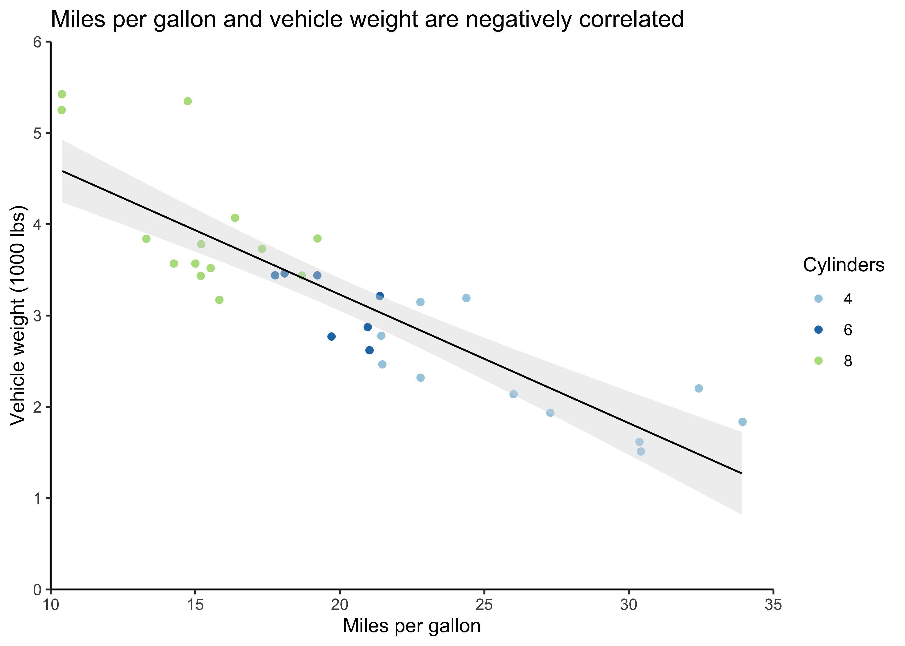
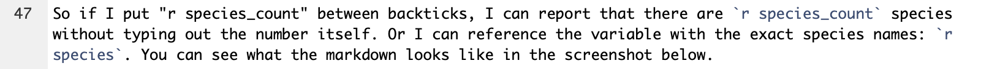

Chapter 5 Content
The content of an R Markdown document includes the markdown text itself, as well as output from code chunks. Code chunks can output data, graphs, tables, and images. You can also reference variables from code chunks in markdown text.
5.1 Markdown overview
R Markdown: The Definitive Guide and this R Markdown cheatsheet provide comprehensive information on the typesetting capabilities of R Markdown. In general, R Markdown typesetting options include *italics*, **bold**, and ~~strike-through~~. These are achieved by wrapping text in a certain number of asterisks or tildes. There are also (parentheses), [square brackets], and "quotation marks" that can have special functions in markdown, like creating hyperlinks: [text](link).
With many of these typesetting characters, if you highlight the text you want to format (by clicking and dragging your cursor), you can just hit the character once to wrap the text automatically. This way, you don’t have to go to the beginning and end of the text and place the characters individually.
Another note about R Markdown is that line spacing matters. For example, if I wanted to include bullet points after this sentence, they wouldn’t render properly if I didn’t hit enter twice before starting them. In other words, I need to have a full line of white space before bullet points and numbered lists. If you’re having issues with your document rendering correctly, make sure you have line breaks between lists, paragraphs, and headers.
5.2 Special characters
If you want any special characters in R Markdown, \(\LaTeX\), or pandoc to appear as text, rather than having them perform some function, you need to “escape” them with a backslash. For example, pound signs/hashtags, backslashes, and dollar signs need to be preceded by a backslash.
This also applies to any chunk outputs that contain strings with special characters, as with knitr::kable tables with \(\LaTeX\) functions or characters (e.g., Greek letters like \(\eta\) to report partial eta-squared or functions like \textit{p} to italicize the text). Sometimes you even need multiple backslashes, so you may have to play around to troubleshoot if they’re not rendering correctly. These kinds of rending issues won’t generally throw errors, so you’ll have to check the output in the knitted document to make sure it looks the way you want.
Speaking of \(\LaTeX\), you can engage “math mode” by putting dollar signs around \(\LaTeX\) math commands. This way, you can include fractions and binomials, math symbols, International Phonetic Alphabet (IPA) symbols, and the like in R Markdown (even if you’re not outputting to a PDF). For example, I can write \(e = mc^2\) in a sentence like this just by wrapping the equation in a single set of dollar signs, or I can use two sets to center the equation: \[e = mc^2\]
5.3 Chunk output
Depending on the kind of content you’re creating with R Markdown, whether it’s a poster, manuscript, or internal lab document, there are several ways you can take code chunks and turn them into content.
5.3.1 Data
When I’m working on a project and checking in with my advisor on my progress, I’m likely to display my raw data and analyses in R Markdown. My usual work-flow includes data pre-processing in MATLAB for EEG data and R for the ERP analyses and behavioral data. I get everything clean and ready to go in these scripts.
As I describe in Section 7.2, I keep separate scripts for each piece of the data analysis. I source them into one another, with a global script at the base with any general variables (like file names, HEX color codes for graphs, etc.) and custom functions. Once I’ve built out this processing pipeline with R scripts, that’s when I’ll source them into my R Markdown documents for statistical analysis and presentation. Once you’ve got your data loaded into R Markdown, you just use R code to run analyses and output them in your document as you would in a regular R script.
If I’m running regressions with lm from the stats package for example, I’ll wrap the summary function around the output. I’ll typically save this as a variable, since I usually want to grab individual values from the variable later (e.g., p values). You can put the new variable name on its own line or print it if you prefer; otherise, you can just have a line with summary(model), and it’ll output the table in your document. If I’m sending this document to someone who’s not familiar with my data, I will also provide some basic information and summary statistics.
## mpg cyl disp hp drat wt qsec vs am gear carb
## Mazda RX4 21.0 6 160 110 3.90 2.620 16.46 0 1 4 4
## Mazda RX4 Wag 21.0 6 160 110 3.90 2.875 17.02 0 1 4 4
## Datsun 710 22.8 4 108 93 3.85 2.320 18.61 1 1 4 1
## Hornet 4 Drive 21.4 6 258 110 3.08 3.215 19.44 1 0 3 1
## Hornet Sportabout 18.7 8 360 175 3.15 3.440 17.02 0 0 3 2# Provide summary statistics for miles per gallon (mpg) and weight (wt)
# select is from dplyr
# describe is from the psych package
mtcars %>% select(mpg, wt) %>% describe()## vars n mean sd median trimmed mad min max range skew kurtosis se
## mpg 1 32 20.09 6.03 19.20 19.70 5.41 10.40 33.90 23.50 0.61 -0.37 1.07
## wt 2 32 3.22 0.98 3.33 3.15 0.77 1.51 5.42 3.91 0.42 -0.02 0.17# Are car weight and miles per gallon correlated?
mpg_model <- lm(mpg ~ wt, mtcars)
# Save summary of model
mpg_summary <- summary(mpg_model)
# Output results
# I could have put summary(mpg_model) or print(mpg_summary) instead if I preferred
mpg_summary##
## Call:
## lm(formula = mpg ~ wt, data = mtcars)
##
## Residuals:
## Min 1Q Median 3Q Max
## -4.5432 -2.3647 -0.1252 1.4096 6.8727
##
## Coefficients:
## Estimate Std. Error t value Pr(>|t|)
## (Intercept) 37.2851 1.8776 19.858 < 2e-16 ***
## wt -5.3445 0.5591 -9.559 1.29e-10 ***
## ---
## Signif. codes: 0 '***' 0.001 '**' 0.01 '*' 0.05 '.' 0.1 ' ' 1
##
## Residual standard error: 3.046 on 30 degrees of freedom
## Multiple R-squared: 0.7528, Adjusted R-squared: 0.7446
## F-statistic: 91.38 on 1 and 30 DF, p-value: 1.294e-105.3.2 Graphs
I could’ve written an entire book on graphs with ggplot; in fact, someone has. I’m going to focus more on the R Markdown piece, but will provide some handy ggplot tips at the end.
Let’s start with a basic scatterplot of the miles per gallon and weight data from the mtcars dataset above. As with the regression output, there are few ways to get the graph from your code chunk into your document. I can just make the graph without saving it as a variable, so it automatically outputs from the chunk, or save it and put the variable name on a new line.
# Save number of cylinders (cyl) as factor
# Otherwise, ggplot will treat it as a continuous variable
mtcars <- mtcars %>%
mutate(cyl = as.factor(cyl))
# Create scatter plot
mtcars_plot <- ggplot(mtcars) +
geom_jitter(aes(mpg, wt, color = cyl)) +
geom_smooth(aes(mpg, wt), method = "lm", se = TRUE, level = 0.95,
fill = "#d7d8db", color = "black", size = 0.5) +
scale_y_continuous(expand = c(0,0), limits = c(0,6)) +
scale_x_continuous(expand = c(0,0), limits = c(10,35)) +
scale_color_brewer(type = "qual", palette = "Paired") +
theme_classic() +
labs(title = "Miles per gallon and vehicle weight are negatively correlated",
y = "Vehicle weight (1000 lbs)",
x = "Miles per gallon",
color = "Cylinders")
# Output plot
mtcars_plotYou can use the chunk options to control how this graph appears in the document. The ones I typically use for outputting graphs are dots per inch (dpi) to control the image quality, out.width and out.height with either specific units or a percentage, and fig.align to change the alignment of the output.

5.3.3 Tables
5.3.4 Images
5.4 Inline R
A very useful aspect of R Markdown is that you can call R objects and functions in markdown or the YAML header by sandwiching them between backticks. For example, let’s say I want to report on the names of the flower species in the iris dataset.
# Pull species column from iris and get unique values in column
species <- iris %>% pull(Species) %>% unique()
# Print species variable
print(species)## [1] setosa versicolor virginica
## Levels: setosa versicolor virginicaMaybe I also want to save a variable with the number of species in this list.
# Get number of unique species
species_count <- length(species)
# Print number of species
print(species_count)## [1] 3I can call species and species_count in the markdown text to reference these variables dynamically. Just as in a code chunk, I have to specify that I’m working with R code by including a lower-case r in the backticks with the variable.
So if I put “r species_count” between backticks, I can report that there are 3 species without typing out the number itself. Or I can reference the variable with the exact species names: setosa, versicolor, virginica. You can see what the markdown looks like in the screenshot below.
